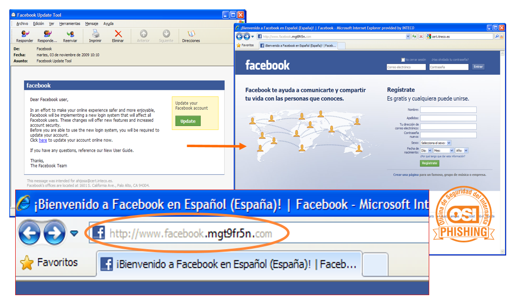

Hasta ahora hemos visto qué riesgos podemos sufrir en el caso de vernos afectados por alguna amenaza en nuestros dispositivos, pero ¿qué es una amenaza?
Por definición, entendemos por amenaza todo aquello que pone en riesgo la seguridad, en este caso, de nuestros dispositivos. Cualquier posible daño, circunstancia o evento que pueda explotar las vulnerabilidades de nuestros dispositivos, ya sea intencionadamente o no, es una amenaza de la que podemos vernos afectados; y por tanto debemos poner los medios pertinentes para evitarlas. Pero antes, vamos a ver cuáles son estas amenazas:
Malware y fraudes
El malware, apodado comúnmente como virus, se trata de un programa malicioso capaz de colarse en los dispositivos con el fin de, por ejemplo, robar datos privados, hacer que el dispositivo deje de funcionar correctamente o tomar su control para llevar a cabo otras acciones maliciosas.
Estas amenazas, de la que ningún usuario de Internet está a salvo, utilizan todas las tretas que siempre se han usado para engañar, timar, robar y, en general, hacer daño a la gente, pero ahora se ha trasladado a nuestros dispositivos y a Internet, desde donde pueden campar a sus anchas y contaminarnos si no tomamos las medidas básicas de seguridad y andamos con ojo.
La ingeniería social
La ingeniería social es el conjunto de trucos y estrategias que los ciberdelincuentes utilizan con el fin de engañar a un usuario para que éste infecte su dispositivo, facilite información privada o simplemente acabe haciendo algo que no desea.
¿Y cómo lo hacen? Muchas veces, aprovechando la curiosidad o el morbo que nos produce conocer y manejar cierta información, también generando miedos, alertas en los usuarios...., consiguen manipularnos y hacernos actuar de la forma que ellos quieren.
Por ejemplo, nos convencen de la necesidad de reenviar un correo electrónico a toda nuestra lista de contactos, descargar y abrir un archivo que se adjunta en un correo bajo alguna excusa, suscribirnos a un servicio de pago o nos incitan a proporcionar información sensible, como pueden ser nuestras claves de acceso a un determinado servicio o nuestros datos bancarios.
Ejemplos de ingeniería social
La ingeniería social puede llevarse a cabo a través de muchos medios, entre los que se encuentra el correo electrónico, las aplicaciones de mensajería instantánea y las redes sociales. Es decir, a través de los servicios que más utilizamos en Internet.
¿Y cuáles son las temáticas más utilizadas por los ingenieros sociales para captar nuestra atención y conseguir sus objetivos?
- Desastres naturales/accidentes
Este tipo de situaciones son utilizadas por los ciberdelincuentes para aprovecharse de la sensibilidad y vulnerabilidad que estos hechos provocan en las personas para, por ejemplo, difundir páginas fraudulentas de donaciones.
- Celebración de olimpiadas, mundiales, festivales, congresos...
Son una buena excusa para poner en circulación falsos sorteos, entradas, descuentos que todo el mundo querrá obtener. Para ello, a cambio de conseguir algo gratis, el usuario solo tiene que introducir sus datos personales.
- Noticias sobre famosos
Escándalos, controversias, muertes…, este tipo de noticias captan la atención de los usuarios. Los ciberdelincuentes, utilizan toda su imaginación para conseguir que hagamos clic en vídeos o enlaces que nos darán detalles sobre este tipo de informaciones. El problema es que detrás de esta supuesta información se suele esconder algún tipo de malware.
- Situaciones que generan alarma
Multas, denuncias, notificaciones, problemas de seguridad. En este caso, a través de un email, se alerta al usuario de que debe realizar una acción de forma inmediata, lo que se denomina como phising (será estudiando más adelante en este módulo). Su principal objetivo es robar datos personales y bancarios de los usuarios e infectar los dispositivos para obtener un beneficio económico.
- Lanzamiento de nuevos producto o servicios
La presentación de un nuevo dispositivo móvil, las actualizaciones de un sistema operativo o cualquier lanzamiento de un producto o servicio de interés general, puede ayudar a propagar correos, mensajes, noticias, vídeos, imágenes con malware.
- Situación política del país
Difundir bulos sobre los políticos y sus partidos, es perfecto para recopilar direcciones de correo electrónico de usuarios así como otros posibles datos personales gracias al reenvío de los mensajes.
Principales tipos de malware
El concepto malware engloba todo el catálogo de programas malignos que contaminan nuestros dispositivos, es la base de lo que conocemos como ciberdelincuencia o ciberataques.
El malware se desarrolla principalmente con tres objetivos: el robo de información, el secuestro de los dispositivos y/o sus datos y el reclutamiento para una red de bots. En la mayoría de los casos, la infección del dispositivo conlleva un móvil económico.
¿Cuáles son los principales tipos de malware que pueden afectar a nuestros dispositivos? Ellos mismos se presentan:
Infografía: «Tipos de malware»
Para verla mejor clica aquí. (Fuente: OSI-INCIBE)
También cabe destacar el siguiente tipo:
- Bots. Ordenadores zombie
Se conoce como ordenadores zombie a aquellos dispositivos que han sido infectados con un malware de tipo bot.
Estos dispositivos forman parte de una red zombie de ordenadores, también conocido como botnet, que es un gran número de dispositivos infectados con el mismo tipo de malware y controlados por una misma persona u organización criminal.
Beneficios económicos de los cibercriminales:
Gracias a estos dispositivos infectados, se llevan a cabo actividades que generan grandes beneficios económicos a los cibercriminales, principalmente:
- Capturar contraseñas y datos personales
Recopilan las contraseñas de los servicios de banca, redes sociales, correo web, etc. que utilizan los usuarios del ordenador infectado para después venderlas.
- Enviar spam y propagar virus
Estos correos spam, pueden por ejemplo, adjuntar ficheros que descargan virus en el ordenador del usuario al abrirlos o incluir enlaces a páginas que suplantan la identidad de servicios, etc.
- Hacer que una página web deje de estar disponible
El ciberdelincuente que tenga el control de la botnet, indicará a todos sus zombies que accedan a la vez a una determinada página web para saturarla y provocar que deje de funcionar correctamente con el objetivo de chantajear al propietario o empresa responsable de la misma.
- Manipular encuestas y abusar de los servicios de pago por publicidad
Los ordenadores zombies también pueden ser utilizados para manipular encuestas o pinchar en banners publicitarios que generan beneficios económicos.
- Llevar a cabo desde los dispositivos otro tipo de fraudes
Acceder a páginas web cuyo contenido es denunciable o ilegal: pedofilia, prostitución, drogas, armas, etc. Almacenar y compartir ficheros con copyright, suplantar la identidad para publicar anuncios falsos, etc.
Principales vías de infección y engaño
¿Pero cómo podemos llegar a infectarnos? La multitud de servicios y dispositivos que utilizamos a diario hace que las vías de entrada de malware hayan aumentado. A continuación te exponemos las principales vías de infección y engaño.
- Correos electrónicos
Los correos electrónicos son una de las principales vías de infección, y esta se puede presentar de varias formas, ya que los correos electrónicos pueden contener ficheros adjuntos maliciosos o enlaces a páginas web maliciosas.
¿Piensas que no hay problema porque sólo abres correos electrónicos de tus allegados? Aunque estos emails suelen provenir de remitentes desconocidos puede ocurrir que procedan de un contacto conocido. Esto puede deberse a que el ordenador del remitente está infectado o que se ha falsificado la dirección de origen del correo.
- Adjuntos maliciosos
Estos correos llegan con un fichero adjunto que suele tratarse de un programa que en el caso de abrirse y ejecutarse descargará el malware e infectará el dispositivo.
¿Cómo identificar los adjuntos maliciosos?
Generalmente los adjuntos son un programa ejecutable (.exe), un fichero (.pdf) o un fichero comprimido (.zip o .rar). No obstante, siempre tenemos que estar precavidos ante cualquier tipo de archivo, en ocasiones llegan en forma de documentos que nos resultan más familiares, como Word, Excel, etc.
Ejemplo de adjunto malicioso
- Enlaces
Cualquier enlace que aparezca en el contenido de un correo electrónico, podría redirigirnos a una web maliciosa que contenga malware con el fin de infectarnos.
Para ello, los ciberdelincuentes usan como gancho una supuesta factura o archivo de interés para el destinatario (¿recuerdas lo que hablamos sobre ingeniería social?), que en realidad puede ser una hoja de cálculo u otro tipo de documento con una macro (pequeño programa que puede realizar diferentes acciones de forma automática) que a su vez descargará el malware.
Ejemplo de enlace malicioso
También puede darse el caso de que estos enlaces nos redireccionen a una página web maliciosa que simule ser un servicio real. A esta técnica se le denomina phishing y te la explicamos a continuación.
- Phishing
El phishing es una técnica usada por los ciberdelincuentes cuyo fin es engañar a los usuarios y manipularles a fin de que acaben realizando alguna acción que ponga en peligro sus datos.
Envían mensajes a través de correos electrónicos, redes sociales o mensajería instantánea, suplantando a una entidad legítima, como entidades bancarias, medios de pago online, redes sociales, servicios, entidades públicas, etc.
En estos mensajes se facilitan enlaces que redirigen a una página web fraudulenta, aunque en apariencia es exactamente igual a la del servicio que suplanta. Allí se solicita la información a la víctima, normalmente sus credenciales de acceso.
Ejemplo de correo electrónico con enlace a phising

Ejemplo de phising
- Aplicaciones maliciosas (apps)
Los principales mercados de aplicaciones, como lo son, Google Play para Android e iTunes para iOS de Apple, disponen de procedimientos de calidad y herramientas de análisis automatizado mediante las cuales minimizan las posibilidad de que una aplicación maliciosas se encuentre disponible para su descarga en los mercados oficiales.
Pero a pesar de estos esfuerzos, se siguen encontrando casos de aplicaciones maliciosas en los mercados de Google y Apple. Entre las aplicaciones maliciosas nos podemos encontrar con las que muestran publicidad molesta, las que capturan información personal (ej. Imágenes o conversaciones de WhatsApp), las que convierten el dispositivo en un zombie a la espera de órdenes del atacante, etc; o las que solicitan más permisos de uso de los necesarios. Por ejemplo, si estamos instalando una aplicación con la finalidad de linterna y nos solicita permisos de acceso a la cámara o a los contactos, será cuanto menos sospechoso.
Ejemplo de aplicación maliciosa
Una práctica de riesgo que realizan los menores es la descarga e instalación de apps desde fuera de los mercados oficiales. Los jóvenes optan a estos mercados alternativos para conseguir de forma gratuita apps de juegos en línea que en los mercados oficiales tienen costes de varios euros. Para poder realizar la instalación tienen que habilitar en sus dispositivos la opción de «Orígenes desconocidos» o realizar un rooteo del móvil. El problema es que ambas prácticas aumentan en gran medida las probabilidades de que se comprometa la seguridad del dispositivo, sobre todo si tenemos en cuenta que los ciberdelinuentes también ponen a disposición del público sus apps de juegos con las que manipular y embaucar a los más jóvenes.
- Páginas web maliciosas
Algunas páginas web están preparadas para infectar al usuario que la visita aprovechando los problemas de seguridad de un navegador no actualizado o de los complementos instalados, como: Java, Flash, etc.
También se puede dar el caso de que una web legítima haya sido manipulada por un ciberdelincuente y redirija al usuario a una web maliciosa o fraudulenta.
La forma de llegar a estas páginas web puede ser a través de enlaces acortados en redes sociales, haciendo búsquedas de programas en webs poco fiables o enlaces en correos electrónicos fraudulentos.
Ejemplo de web maliciosa
- Descarga de ficheros
Al abrir o ejecutar ficheros descargados de Internet (programas, contenido multimedia, documentos, etc.) debemos ser precavidos ya que pueden traer camuflado algún tipo de malware.
Hay que tener especial precaución con lo que descargamos mediante programas de compartición de ficheros (P2P) u obtenemos en las páginas web de descarga de contenidos, ya que estos ficheros pueden ser más propensos a contener malware.
- Redes sociales
Las redes sociales también son utilizadas para infectar los dispositivos debido a la gran cantidad de usuarios que las frecuentan y el alto grado de propagación.
Debemos ser precavidos frente a enlaces a páginas web que resulten extrañas o poco fiables, solicitudes para instalar programas con el fin de acceder a un contenido, publicidad falsa o aplicaciones que solicitan autorización no justificada para el acceso a nuestra información personal.

Ejemplo de publicidad engañosa en red social
Ejemplo de enlace malicioso en red social
Ejemplo de publicidad engañosa
- Vulnerabilidades y fallos de seguridad
Una vulnerabilidad es un fallo o problema de seguridad de un programa, aplicación, complemento o sistema operativo.
Frecuentemente estas vulnerabilidades son aprovechadas por los ciberdelincuentes para infectar los equipos, a veces sin que el usuario tenga que realizar ninguna acción peligrosa de manera consciente.
Para evitar que esto suceda, los fabricantes generan actualizaciones que solucionan los problemas de seguridad.
- Dispositivos de almacenamiento externos
La infección a través de dispositivos de almacenamiento externo, como pueden ser dispositivos USB o tarjetas de memoria, se realiza principalmente al copiar archivos infectados desde ellos a nuestros dispositivos.
En ocasiones, podemos resultar infectados simplemente por el hecho de conectar a nuestro equipo un dispositivo de almacenamiento que contenga un virus, sin realizar ninguna otra acción. Esto es debido a que algunos tipos de malware tienen la capacidad de auto ejecutarse.